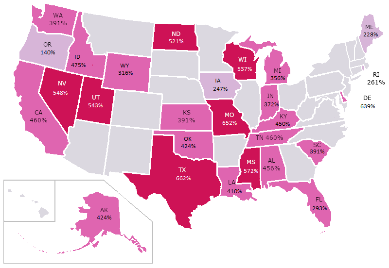

Section 6.8 Solving for Change
Now that we understand interest rates, risk, and correlation, we can begin to really look at the problem of predatory lending. The Center for Responsible Lending (CRL) tracks payday lending across the country. Using a $300 loan, they calculated the annual percentage rate that you would pay in interest in each state of the United States. Note that some of the states have no rate listed - those states have passed laws which make predatory lending unprofitable.

1
creativecommons.org/licenses/by/1.02
creativecommons.org/licenses/by-nc/4.0/All of these rates are unfair and predatory, but some of them are appalling. In Texas, payday lenders charge up to 664% interest on a $300 loan - that means that over the course of a year, if you borrow $300, you end up paying back
\begin{equation*}
A = 300 + 300*(6.64)*(1) = \$2,292
\end{equation*}
That’s $1,992 in interest on a $300 loan - about $75 every two weeks. Payday lenders tend to break their loans down into smaller amounts in order to make it seem like less. Rather than saying $1,992 in interest every year, or even $75 every two weeks on a $300 loan, they would say, "Our fee is $25 for every $100 you borrow, paid back after two weeks." If that 2 weeks ends, and you can’t re-pay the loan...another $25 for every $100 is charged. For a borrower struggling to make ends meet, the fees add up like clockwork.
Lenders make many arguments about why they should be able to charge these rates. Sometimes they say that because people are willing to pay their rates, they should be able to charge them - if it were too much, no one would pay them. They say that they have to charge such high interest rates because the risk of default - a borrower not paying back their loan - is so high. And they make the argument that if they didn’t lend money to these people, no one else would.
All of these arguments have some merit, and if we want to fight predatory lending, we need to learn to make counter-arguments. This is where our newly learned mathematical skills come into play.
Subsection 6.8.1 If people are willing to pay...
The first argument for payday lending says, basically, that if people are willing to pay for a payday loan, then it should be legal to offer them. This is a free market argument - essentially saying that if the fees were too much, the market wouldn’t support them.
There is definitely something to this argument - in Texas, for example, in 2021, there is no cap on the interest that can be charged for a payday loan, but as we saw above, the average rate is 664%. This is essentially letting the market choose the rate - lenders have stopped at this point because no one will pay rates higher.
The people who borrow loans at these ultra-high interest rates, though, don’t do it because they have plenty of money to throw around. They do it because they have no other choice. We can see this by looking at the correlation between the number of payday lenders and where people live.
Table 6.8.2 shows data, taken from the 2012 American Community Survey (part of the Census) on the 20 largest counties in Alabama. For each, we have the number of 522390 establishments (a category which includes payday lenders and related businesses which provide financial services outside of the traditional banking sector), the percentage of the population which is white, the percentage of the population which is Black, and the median household income.
| County | Number of Payday Lenders | Percent White | Percent Black | Median Household Income |
|---|---|---|---|---|
| Baldwin County | 16 | 86.3 | 8.8 | 48378 |
| Calhoun County | 15 | 75.6 | 21.4 | 39169 |
| Cullman County | 6 | 96.4 | 1.1 | 37287 |
| DeKalb County | 6 | 94 | 0.8 | 38445 |
| Elmore County | 10 | 75.9 | 20.9 | 53328 |
| Etowah County | 10 | 81.3 | 15 | 34264 |
| Houston County | 14 | 70.2 | 26.5 | 40409 |
| Jefferson County | 82 | 53.2 | 42.6 | 43959 |
| Lauderdale County | 9 | 87.2 | 10 | 41908 |
| Lee County | 14 | 70.2 | 22.8 | 45043 |
| Limestone County | 5 | 80.7 | 12.5 | 47999 |
| Madison County | 23 | 69.2 | 24.5 | 56839 |
| Marshall County | 9 | 90.6 | 2.1 | 36197 |
| Mobile County | 51 | 60.6 | 35.1 | 39691 |
| Montgomery County | 33 | 39.6 | 55.3 | 41807 |
| Morgan County | 9 | 82.2 | 11.8 | 45051 |
| St. Clair County | 8 | 87.7 | 9.2 | 51859 |
| Shelby County | 15 | 81.1 | 11.2 | 65728 |
| Talladega County | 9 | 64.2 | 34 | 31547 |
| Tuscaloosa County | 17 | 67 | 30.4 | 41139 |
We can look at the correlations between these different data sets. For example, the R code below calculates the correlation between the number of payday lenders and the white population of a county, which is -0.68.
This means that there is a negative correlation between the percentage of a county which is white and the number of payday lenders - that is, the more white people live in a county, the fewer payday lenders will you find. Because Alabama is largely a biracial state (with non-white and non-Black minority populations making up a very small percentage of the population), we see a similar (but reversed) correlation between Black population and payday lenders of 0.67 - so more Black people in a county corresponds to more payday lenders. The R code to calculate that correlation is next.
When we see a correlation like this, as we discussed before, we need to remember that it’s not proof of a cause - just evidence. One thing we should always be thinking about is the possibility of confounding. Confounding is when another factor we’re not thinking about causes a change in our data. For example, here, poverty could be a confounding factor. Because of the deep legacy of racial inequality in the United States, Black people are more likely to live in poverty. Could the correlation between counties with higher Black populations and payday lenders actually be because those counties are poorer? Let’s look and see if there is a correlation between median income and the number of payday lenders.
The correlation here is 0.02, extremely close to 0. Remember that a correlation of 0 means that there is no relationship between the two data sets - that when one increases, the other is equally likely to increase or decrease. So median income doesn’t predict the number of payday lenders nearly as well as race.
In the exercises, we’ll consider another possible confounding factor - population. Is it possible that the counties with larger Black populations just have more people, and thus more payday lenders?
Subsection 6.8.2 We have to charge those rates, because of the risk!
The second argument made for why payday loans are "fair" is that the lenders are taking a large risk by making the loans - so they should be entitled to charge high interest rates. One question here - which we won’t focus on - is whether it is fair to charge interest at all, or if our society should have a more effective way of providing capital to those who lack it. Kiva is a non-profit organization that provides loans without interest worldwide, for example. But even working within the existing framework of capitalism, where any money borrowed must be repaid with interest, we can ask the question of what level of interest is fair.
3
www.kiva.org/Let’s look at how much money payday lenders are making on loans, through the lens of expected value. In 2015, the Center for Responsible Lending (CRL) found that 46% of all payday loan borrowers defaulted on their loans within two years [6.11.1.113]. A default on a loan occurs when the lender is unable to meet the terms of the loan. While this doesn’t necessarily mean that they didn’t pay the loan back (in fact, the CRL found that 66% of those defaulting eventually paid their loans back in full, plus any fees that they would have paid for defaulting, like late fees), it does mean that the lender is losing some money on the investment. The same study found that 20% of loans are charged off within two years, meaning that the lender gives up on collecting the debt. Again, this doesn’t mean they lose all of their money, since the loans are then usually sold to a debt collector who tries to collect some or all of the money, but they do lose much of their investment in this case.
Obviously, these situations are very complicated, and there are a lot of possible results, so as we did before, we’ll consider a simplified version.
Let’s assume that 20% of the time, the lender loses everything (the loan is charged off). 26% of the time (in the other defaults), they get paid back the full value of the loan, plus the interest, plus late fees. In the remaining 54% of cases, the lender pays back the loan in full.
In a 2014 report, the Consumer Financial Protection Bureau (CFPB) found that the median payday loan sequence is repaid after one month [6.11.1.114]. So in our scenario above, there are 3 possibilities - 20% of the time, the lender loses everything; 26% of the time, they get back the loan, plus the interest and late fees; and 54% of the time they get their loan back plus interest.
Let’s say someone borrows $300 for one month in California at a 460% interest rate. The late fee for a defaulting lender is $25. How much money should the payday lender expect to make off of them?
First we need to calculate the interest paid, using the simple interest formula:
\begin{equation*}
A = 300 + 300*4.60*\frac{1}{12} = \$415
\end{equation*}
The borrower ends up paying $415 total, or $115 in interest.
Now we can calculate expected value. We take each probability and multiply it times the amount that the lender earns (or a negative value, if they lose money). Then we add them up.
\begin{equation*}
0.20*(-300) + 0.26*(115+25) + 0.54*(115) = \$38.50
\end{equation*}
On average, the lender earns $38.50 on the $300 loan.
Of course, many borrowers end up renewing their loans for much more than a month. Unlike a borrower who pays back their loan quickly, who may just have a temporary emergency need for money, these borrowers struggle to ever pay back their loan, racking up more fees each time they renew the loan.
What if we look at the exact same scenario, but the borrower borrows the money for a year? Then they will pay back a total of
\begin{equation*}
A = 300 + 300*4.60*1 = \$1680
\end{equation*}
The borrower ends up paying $1,680 total, so $1,380 in interest. If they default on the loan, they also end up paying late fee (possibly more than one, but let’s assume just one). We can calculate the expected value for the payday lender:
\begin{equation*}
0.20*(-300) + 0.26*(1380+25) + 0.54*(1380) = \$1050.50
\end{equation*}
For every borrower that pays their loan back after a year of fees, on average, the lender can expect to earn $1050.50! This illustrates the fundamental mechanic of payday lending - the lenders make more money if they lend to borrowers who can just barely afford to pay the loan back. They have a vested interest in lending to people who are struggling to get by instead of those who are dealing with an unexpected emergency.
Subsection 6.8.3 If we don’t lend to them, who will?
This point, of all those made, is the most salient. Payday lenders exist because for many people with poor credit, there are no other options. If a borrower has something of value to pawn, they could use a pawn broker - but for people struggling to get by, things of value may be too precious to pawn (the computer that a student uses for school; heirloom jewelry; the car used to get to work).
However, as compelling as this argument might be, it turns out to be false. Many states have banned payday lending, usually by setting a cap of 36% on annual interest rates. While this cap may seem high when compared to interest rates on credit cards and other types of loans, it is generally low enough to make payday lending untenable. In 2017, the Center for Responsible Lending studied states which have passed these kinds of bans, and found that banning payday loans did not significantly impact borrowers’ access to credit [6.11.1.115]. Borrowers who would otherwise have used a payday loan, had they been legal, turned to products such as lines of credit, installment loans, loans from religious institutions, and payment plans with creditors. Because of the high interest rates and predatory fees, researchers found that taking out payday loans actually made consumers more likely to have negative financial outcomes, like declaring bankruptcy.
In the absence of payday lenders, financial institutions like credit unions can fill the gap. Many credit unions, which are non-profits, offer payday alternative loans to their members. These loans function much like payday loans, but with interest rates that are much more reasonable. Removing bad actors like payday lenders creates more space for financial services like these to be successul in our communities.
Subsection 6.8.4 What Can We Do?
The payday lending industry has deep pockets and strong connections to maany of the powerful people in this country.